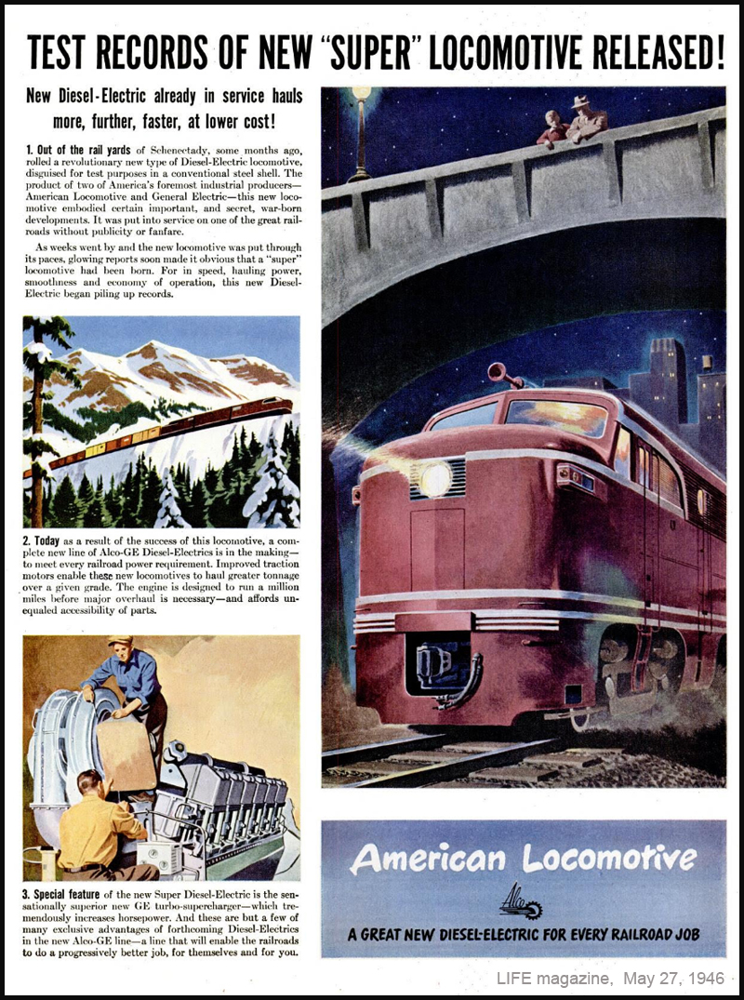

Alco Builders photo - December 1945 - Authors collection.
| The diesel invasion began, slowly at
first, in the 1920's as small diesel switchers began
appearing on American railroads. The trend continued
gradually through the 1920's and 30's and up to
World War Two. But the diesels were few and
still mostly confined to switcher duty, and steam
power on the mainlines remained essentially
unchallenged up to and through the war years. But
immediately after the war the diesel invasion
switched into high-gear, as diesel locomotives began
replacing all steam, including mainline steam.
Ramping up in the late 1940's, the diesel invasion
would replace virtually all steam power in less than
a decade. The EMD FT was introduced in 1939, and because of wartime restrictions, was the only road freight diesel produced during WWII.1 Alco and Baldwin were restricted to only building steam locomotives during the war. But right after the war Alco introduced its competitor to the FT, the "Alco-GE 1500", 1,500 horsepower, later to be known as the FA1, powered by Alcos new 244 engine. Construction of the prototypes for
Alco model DL-208 (A-unit) and DL-209 (B-unit)
began in 1945, and by December of 1945 the 3-unit
ABA set was complete, and posed for their builder
photos outside the Schenectady plant in December
1945 and January 1946.
 Alco Builders photo - January 1946 -
Authors collection.
The 3-unit ABA set was numbered
1500, 1501 and 1502, and was painted in a 2-tone
grey scheme with a red stripe along the bottom.
The lighter striping was aluminum.2
There are no known color photos of the
demonstrators, however there is Alco promotional
literature that contains illustrations of the
units in this scheme.
Their official model designation was DL-208 and DL-209. They were called "The Alco-GE 1500's" for promotional purposes. The model designation "FA" was not used for the FA1 or FA2's until about 1950.2 The Gulf Mobile & Ohio railroad was the first railroad to order the new Alco freight cabs. Initially the GM&O order was penciled in as the earlier DL-202 and DL-203, which were the "Black Maria" demonstrator set.2 However, before production began, the order was changed to the upgraded DL-208 and DL-209 (the FA1) and no "production" Black Marias were ever built, only the demonstrator set. The Demonstrator set, 1500, 1501 and 1502, were built as part of the GM&O order, however, when new they were briefly painted in the Alco demonstrator scheme and were sent on a 46 day shake-down tour on the D&H in early 1946. They were then repainted into GM&O colors, renumbered to GM&O 700, B1 and 701, and were at work on the GM&O by May 1946. (The tour on the D&H and the delayed delivery to the GM&O was because of a four month railroad workers strike.2 ) The FA1 demonstrator A-units had three distinct external styling cues that set them apart from the later FA1's and FA2's. The styling was clearly influenced and adapted from the Alco PA: 1. The same curved strip behind the cab windows, as seen on the PA. 2. The same streamlined fuel tank side skirt, as also seen on the PA. 3. A unique lowered headlight, not seen on the PA, and only seen on the first group of FA1's. (GMO photo from FA1 operators manual here) GM&O 700 through 735, (which included the demonstrator set), the first 36 FA-1 units built, all had these unique features. All 36 units in this style were only owned by the GM&O. The first 36 GM&O units all had the lowered headlight and the curved drip-strip behind the cab, however only the first nine or ten had the fuel tank side skirting. Starting with GM&O number 736, built in September 1946, those early styling cues were deleted, and all future FA1's and FA2's did not have them. In 1946 Alco began an advertising campaign introducing the new FA and PA to the general public. Two FA ads appeared in Life magazine in 1946.  Life magazine,
April 29, 1946. Authors collection.
 Life
magazine, May 27, 1946. Authors collection.
Bibliography: 1. https://en.wikipedia.org/wiki/EMD_FT 2. Book: "Alco's FA, Running in the Shadow" by Craig Rutherford, 2005. |